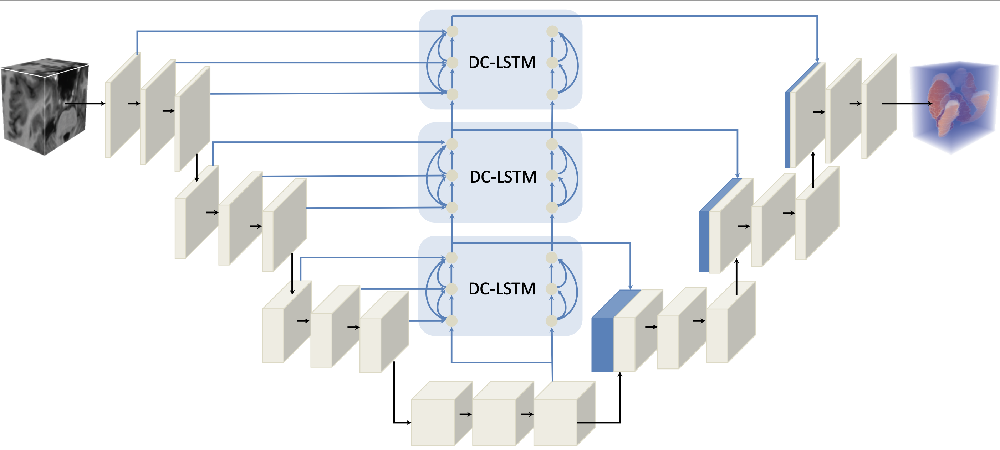
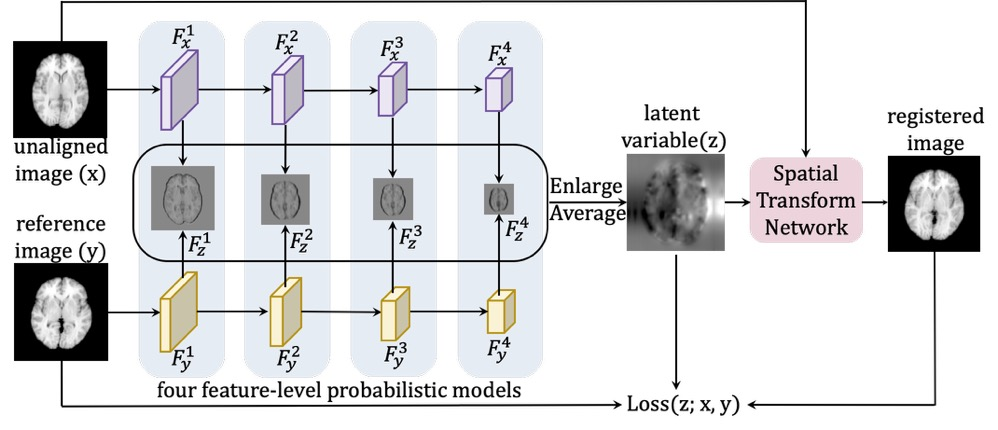
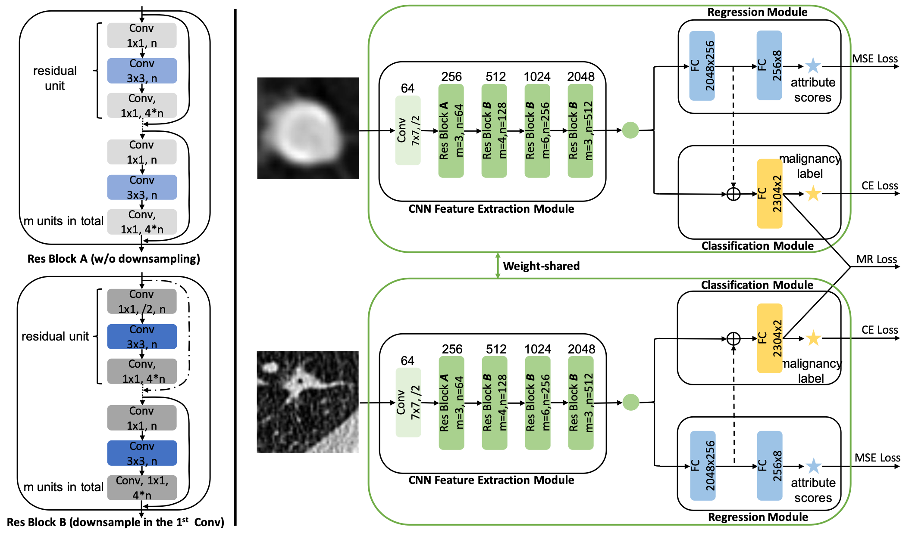
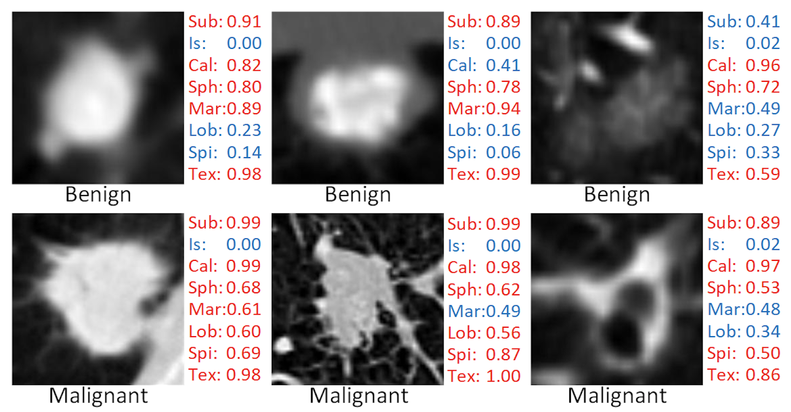

Lihao Liu刘力豪M.Phil. Student Rm 1024, Ho Sin-Hang Engineering Building
|
 |


Biography [Curriculum Vitae]
I am currently a third year M.Phil. student in Department of Computer Science and Engineering, The Chinese University of Hong Kong, under the supervision of Prof. Pheng-Ann Heng. Before that, I received the B.Eng. degree from School of Big Data & Software Engineering in Chongqing University in 2016, supervised by Prof. Jun Zeng.
My research interests includes medical image analysis and deep learning. Recently, I focus on developing 3d deep learning algorithms to solve medical image segmentation and registration tasks.
News
- [07/2019] Our extended paper on lung nodule analysis is accepted at IEEE TMI.
- [06/2019] Our paper on unsupervised 3d brain image registration is early accepted at MICCAI 2019!
- [08/2018] Our paper on lung nodule analysis is accepted at MICCAI-DLMIA 2018.
Publications [Google Scholar]
|  |
"Ψ-Net: Stacking Densely Convolutional LSTMs for Sub-cortical Brain Structure Segmentation"
Lihao Liu, Xiaowei Hu, Lei Zhu, Chi-Wing Fu, Jing Qin, and Pheng-Ann Heng.
Under Review
|
|  |
"Probabilistic Multilayer Regularization Network for Unsupervised 3D Brain Image Registration"
Lihao Liu, Xiaowei Hu, Lei Zhu, and Pheng-Ann Heng.
Medical Image Computing and Computer Assisted Intervention (MICCAI), 2019.
[paper] |
|  | "Multi-Task Deep Model with Margin Ranking Loss for Lung Nodule Analysis" Lihao Liu, Qi Dou, Hao Chen, Jing Qin, and Pheng-Ann Heng. IEEE Transactions on Medical Imaging (TMI), 2019. |
|  | "MTMR-Net: Multi-Task Deep Learning with Margin Ranking Loss for Lung Nodule Analysis" Lihao Liu, Qi Dou, Hao Chen, Iyiola E. Olatunji, Jing Qin, and Pheng-Ann Heng. Deep Learning in Medical Image Analysis (MICCAI-DLMIA), 2018. |
Experiences
-
Medical Imaging Lab (CUMed), The Chinese University of Hong Kong, Hong KongMar. 2017 – Jul. 2017
Junior Research Assistant (supervised by Prof. Pheng-Ann Heng)
-
Weiboyi Technology Co., Ltd, Beijing, ChinaMay. 2016 – Feb. 2017
Data Mining Engineer
Honors & Awards
- Outstanding Student Award, Chongqing University, 2015
- Qiu Shi Scholarship, Chongqing University, 2014
Professional Activities
- Membership: MICCAI Student
- Paper Reviews: MICCAI 2019 & IEEE TMI
Teaching
| 2019-2020 | Spring | CSCI2100 Data Structures |
| 2018-2019 | Fall | CSCI3160 Design and Analysis of Algorithms |
| 2017-2018 | Fall | CSCI3160 Design and Analysis of Algorithms |